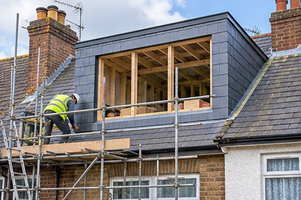

Project scope
Make room under the roof
A well-planned loft can create a bedroom, a quiet office or a private suite. The position of the stair and usable headroom shape the layout just as much as the roof itself.
- Existing roof and floor assessment
- Stair position, rooflights and dormers
- Insulation, joinery and bathroom fit-out
Can the house stay occupied?
Tell us which rooms must remain accessible. Stair installation, deliveries and opening up the roof need to be discussed when planning the programme.